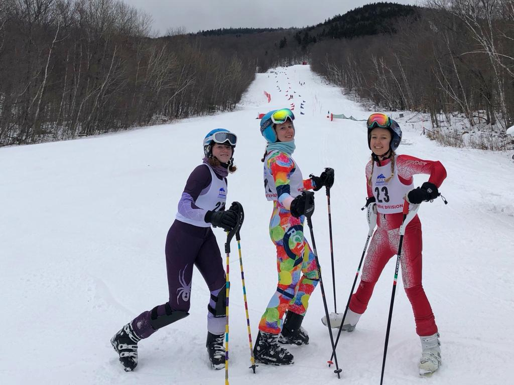
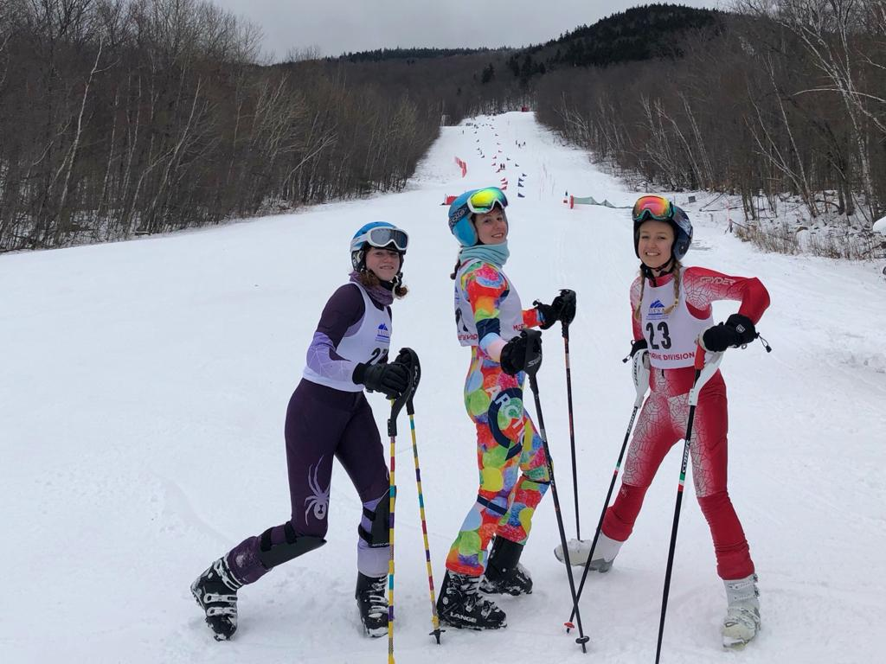

Fun stuff
Co-host of the FJC on WYBC (Yale Broadcasting Company)
Captain of Yale Alpine Ski Team

Books read so far in 2021:
Goodreads
Co-host of the FJC on WYBC (Yale Broadcasting Company)
Captain of Yale Alpine Ski Team

Books read so far in 2021:
Goodreads